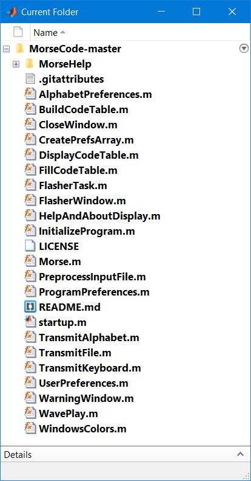
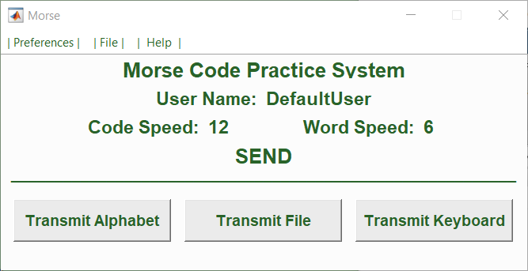
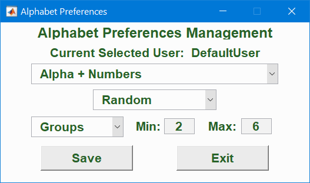
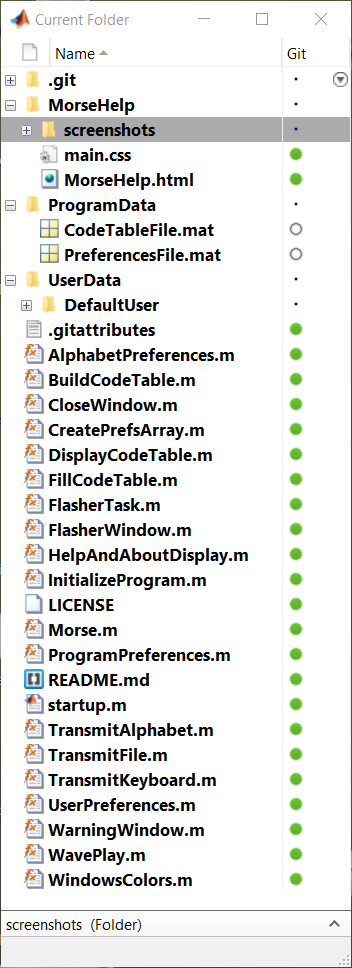

This helps file was built using Brackets, an open-source code editor. I used Brackets built-in index.html and main.css files that Brackets uses to introduce the program when it is first launched, as templates for this document. It's a good way to start.
Just click in any link below to go to the selected section.
I originally published this program on the MatLab side in 2009. This version, as of April 2019, is a major rewrite with many new features. A few of the more notable changes are summarized below:
This program is a training aid to help the user learn and improve their proficiency in receiving Morse code. The program allows the user to generate Morse code in several ways:
The code speed (rate of dots and dashes), word speed (period between words) and audio frequency of transmitted dots and dashes can be set separately for each user profile. These parameters can be adjusted through the Preferences drop down menu on the main window.
When the program is installed, it is initialized with a default user. The default user parameters cannot be changed. In order to customize the experience, new users must be added. Then the code speed, word speed and frequency can be set as the user desires. This is done through the user preferences drop-down menu on the main program window. In addition, under the preferences menu is the ability to reset the program to its default state. This will erase any previously established users and their data and return the program to its original startup configuration.
When transmitting either a text file or the alphabet, the operator can pause the transmission at any time. When transmitting a file the user must first select a file to be transmitted. The transmission will stop when the end of the file is reached or the transmission is paused by the user. All text in the file is converted to upper case as it is being used and all extra spaces between words are removed. When Transmitting Alphabet the user can select the alphabet content, whether it is transmitted sequentially or randomly, or whether to split the transmitted characters in groups of fixed or random sizes.
When Transmit Keyboard is selected, a window opens showing the keyboard entries and transmitted data. All input is converted to caps and the only special keys accepted are backspace, escape and F5. Backspace will delete the last keyboard input and Escape will clear all entries to start over. F5 is used to start and stop transmission. The imputed text is buffered and transmitted at the selected rates.
From the menu bar under Help, selecting "Code Table" will display the code table built into the program. There are 60 entries in the table with the last being a word space. Selecting Help will display this file in the MatLab browser. Selecting About will provide author details and version number.
The program can be downloaded from the git repository located at https://github.com/jbwillmann/MorseCode.git. When the downloaded file, MorseCode-master.zip is extracted, the contents of that file is as shown below.
Each of these files is described in detail at 5.0 File and Program Structure, however a few comments are appropriate here.
First, put the folder in your preferred location. You can change the name of the folder if you like. Next open MatLab and navigate to that folder. Then run the main file, Morse.m. The first time it is run it will initialize the program by creating the ProgramData directory and the UserData directory and the main window will open and you will be ready to proceed.
In this section we review the user interface and describe each of the program windows and its operation.
This is the window that opens when the file morse.m is executed. Along the top is a drop down menu which allows you to change user preferences, select a .wav audio file for playback or use the help system. In the center of the window is the username and the selected user code speed and word speed. Along the bottom are three action buttons allowing the user to either transmit the alphabet, transmit from a saved file, or transmitted code directly from the keyboard.
The drop down menu on the main program figure has the following choices:
------------------------------------------------------------------------------------------------------------------------------------------------------
When User Preferences is selected from the Preferences Drop Down Menu on the main window, the window shown below opens.
This window displays the currently selected user at the top of the window. The drop down box labeled "Select a User" can be selected to allow you to "Add a New User" or to select a user from the list displayed. If a user is selected, that users preferences are displayed and can be edited if desired. After the editing is complete, select "Save" to save the changes. If the user selected is not the "Currently Selected User", then "Make Active" can be selected and the current user will be replaced with the new or changed user. Also the selected user can be deleted if desired. Note that the Default User cannot be deleted or edited. Depending on the task being performed, only certain of the action buttons along the bottom of the window are displayed or enabled.
------------------------------------------------------------------------------------------------------------------------------------------------------
When Window Preferences is selected from the Preferences Drop Down Menu on the main window, the window shown below opens.
This window displays the currently selected user at the top of the window. There is a checkbox to select 'Save Window Position on Exit'. The default is checked. Once you like the position of windows and have saved those windows, then those windows will reopen at that position. If desired, after windows are positioned to your liking, the box can be unchecked to prevent further changes. The 'Scale Factor' is set to 1 by default. It is currently not used.
------------------------------------------------------------------------------------------------------------------------------------------------------
When Transmit Alphabet is selected on the main window, the window shown below opens.
At the top of the window is the currently selected mode of operation. This can be changed by selecting the Select Mode button at the bottom of the window. The various options are displayed in the Alphabet Preferences Window described in section 3.3.1 below.
Selecting the Start Transmission button will begin the transmission. The Start Transmission will change into a Pause Transmission button that can selected to pause the transmission. Selecting Exit at any time will stop the transmission and close the window
------------------------------------------------------------------------------------------------------------------------------------------------------
This window opens when Select Mode is selected from the Transmit Alphabet Window.
The first drop down allows the selection of alphabet, alphabet plus numbers, alphabet plus numbers plus punctuation or alphabet plus numbers plus punctuation plus special characters, See the code table to see all of the characters included.
The next dropdown provides a selection between transmitting sequentially from the table or a random selection from the selected character set.
Next the user can select whether the transmission specified above in broken into code groups with a single space between groups. If the Min and Max are the same then all groups will be that size. If Min is less than Max the size of each group will be randomly selected between those two sizes.
When all choices are made and Save is selected, the Preferences file is updated and the TransmitAlphabet program is restarted to reflect the new settings. Otherwise if Cancel is selected all entries are discarded and the window is closed.
------------------------------------------------------------------------------------------------------------------------------------------------------
When Transmit File is selected on the main window, the window shown below opens.
Before you start you must first select a text file to playback. Selecting 'Select Input File' box will open a file selector window in the selected users Data directory. You can navigate to any folder to select a file. Once a file is selected that file name will be displayed at the top of the window.
If you wish to save an audio file of the transmission, check the bod 'Save Audio File' before starting the transmission. After completion, that file will be saved in the users Data directory.
To begin transmission select 'Start Transmission' and the text will be transmitted and displayed in the text areas above. After the transmission starts, the 'Start Transmission' button will change to a 'Pause Transmission'.
The transmission will stop when an EOF is reached on the input text file 'Pause Transmission' is selected, Selecting 'Exit' will terminate the process.
------------------------------------------------------------------------------------------------------------------------------------------------------
When Transmit Keyboard is selected on the main window, the window shown below opens.
At the top of the window the status of the F5 key is shown. Transmission can be started, paused or stopped with this key at any time. All input is converted to caps and the only special keys accepted are backspace, escape and F5. Backspace will delete the last keyboard input and Escape will clear all entries in order to start over.
As you are typing the input appears in the 'Keyboard Input' If transmission is on, the characters will move from that string to the 'Character Being Transmitted display area along with the name of the character immediately below. At the same time the character will go to the 'String Being Transmitted' area where all of the characters remain until the window is closed or the window is cleared by entering escape. If you type ahead of the transmission, the characters in the 'Keyboard Input' can be edited using the delete key and retyping.
------------------------------------------------------------------------------------------------------------------------------------------------------
The following screenshot shows the directory structure and all of the system files used by the program.
Following is a brief description of each file shown in the directory structure above.
The core of the program is the CodeTable. The function BuildCodeTable creates a 60x4 cell array where the first 3 columns are text and contain the character, dots and dashes, dits and daws. The fourth column is reserved for a wave file that represents the Morse code for that character at the selected speed and audio frequency.
After the GUI is constricted, to initialize the program the function FillCodeTable is called. This function first calls BuildCodeTable to populate the first three columns of the CodeTable. Then this function builds the dots dashes and spaces for the selected code and word speed by calling the function MakeWave to build the wave file for a dot, dash and spaces. Then MakeCharacter is called to build the wave file for each character. This result is stored in the fourth column of the CodeTable for each of the character entries in the table.
When either the speed or frequency is changed, this process is repeated so there is a new CodeTable constructed to use with the new settings. The process of transmission consist of taking each character of the input stream and sending the wave file associated with that character to the standard audio output using waveplay. Because waveplay does not return until the sample is sent, when sending the alphabet or a loaded text string, the function XmitAlphabet in TransmitAlphabet.m and XmitFile in TransmitFile.m just loop through all of the characters until completed.
Transmitting from the keyboard is a bit more complicated. Calling TransmitAlphabet.m opens that window and starts a timer task and activates the KeyPressFunction. There are 3 special characters the program uses for control. F5 is used to toggle transmission on or off. Escape is used to clear and reset the entries. Backspace is used to clear a keyboard entry while it is in the keyboard entry buffer. If any other character is typed that is not a valid Morse character, the entry is discarded. Otherwise, the character is put into a 2xn cell array InputString. In row 1 is the character and in row 2 is the wave file for that character. All the while this input is going on, the timer task is looking at the InputString to see if there is a new character. It is transmitted if transmission is enabled. The timer task continues and repeats this process until it runs out of characters or transmission is manually stopped.
This Change Log provides a summary of the changes to each version of this program